1. 题目概述
1.1 问题背景
在生鲜商超中，蔬菜类商品的保鲜期短，品相随销售时间增加而变差，大部分品种当日未售出则隔日无法再售。商超需根据各商品的历史销售和需求情况每天进行补货决策。蔬菜的进货交易时间通常在凌晨 3:00–4:00，商家须在不确切知道具体单品和进货价格的情况下做出当日补货决策。可靠的市场需求分析对补货和定价决策尤为重要。
1.2 附件数据
| 附件 | 文件名 | 规模 | 内容 |
|---|---|---|---|
| 附件1 | 附件1.xlsx | 251 行 × 4 列 | 6个蔬菜品类下各单品的商品信息（单品编码、名称、分类编码、分类名称） |
| 附件2 | 附件2.xlsx | 878,504 行 × 7 列 | 2020-07-01 至 2023-06-30 各商品销售流水明细（单品编码、销量、单价、是否打折、销售类型） |
| 附件3 | 附件3.xlsx | 55,983 行 × 3 列 | 各单品每日批发价格（日期、单品编码、批发价格 元/kg） |
| 附件4 | 附件4.xlsx | 6 行 × 3 列 | 各品类近期损耗率 |
1.3 四个子问题
| 问题 | 核心任务 | 分析方法 |
|---|---|---|
| 问题 1 | 分析蔬菜各品类及单品销售量的分布规律及相互关系 | 描述统计、帕累托分析、STL时间序列分解、Pearson/Spearman相关、CCF互相关 |
| 问题 2 | 以品类为单位，给出未来一周日补货总量和定价策略，使收益最大 | 对数线性需求模型、ADF+KPSS时序诊断、Newey-West HAC修正、报童模型、fmincon非线性优化、蒙特卡洛模拟、NSGA-II多目标优化 |
| 问题 3 | 单品级补货计划：可售单品 27–33 个，最小陈列量 2.5 kg | 组合优化、单品选择+订货量联合决策 |
| 问题 4 | 开放式：建议商超还需采集哪些数据 | 数据需求分析与论证 |
2. 数据预处理
将附件2（销售流水明细）与附件1（单品→品类映射）按单品编码关联，聚合得到六个蔬菜品类在 2020-07-01 至 2023-06-30 期间的每日销量，共 1,085 天 × 6 品类 = 6,510 条有效记录。退货记录作为负销量纳入合计，折扣销售与正常销售统一按销量汇总。
| 品类 | 单品数 | 零销量天数 | 损耗率 |
|---|---|---|---|
| 花叶类 | 99 | 0 | 12.83% |
| 食用菌 | 71 | 0 | 9.45% |
| 辣椒类 | 43 | 0 | 9.24% |
| 水生根茎类 | 18 | 0 | 13.65% |
| 茄类 | 10 | 35 | 6.68% |
| 花菜类 | 5 | 1 | 15.51% |
3. 问题 1A：销售量分布规律
问题 1 的第一个子问题要求分析蔬菜各品类及单品销售量的分布规律，具体包括：各品类的日均销量水平、销量稳定性（波动程度）、销量的分布形态（是否对称、是否存在极端值）、单品销量的集中程度。
3.1 描述统计分析（图 1）
图 1 以六个子图呈现各品类日销量的描述统计特征，所有数据来源于对原始销售流水按日期和品类聚合后的 daily_category_sales.csv（1,085 天 × 6 品类）及从中计算的 desc_stats.csv。
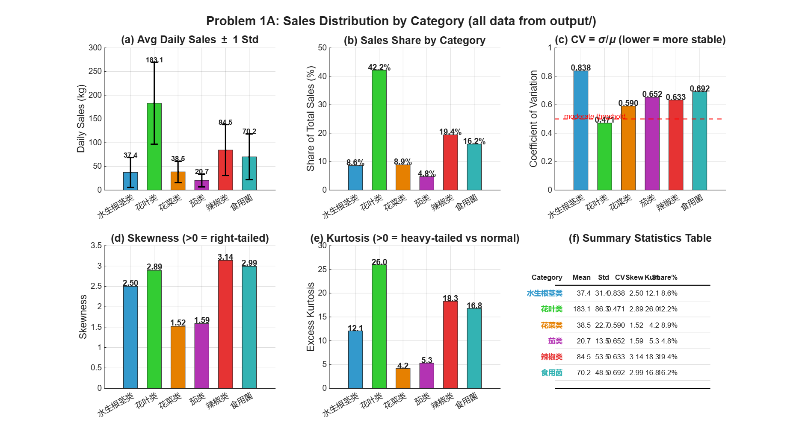
3.1.1 子图 (a)：日均销量与标准差
图中每个柱形顶部延伸出的黑色线段称为误差线，其长度为 ±1 倍标准差（Standard Deviation, σ）。标准差衡量的是数据点围绕均值的离散程度。误差线的物理含义为：若数据服从正态分布，则约 68% 的观测值落在「均值 ± 1σ」区间内。误差线越长，说明该品类的日销量波动范围越大，预测难度越高。
| 品类 | 日均销量 (kg) | 标准差 σ (kg) | σ/均值 | 数据解读 |
|---|---|---|---|---|
| 花叶类 | 183.1 | 86.3 | 0.47 | 日均销量最高的品类，占全部蔬菜销量的 42.2%。误差线绝对长度最大（±86.3 kg），意味着日销量在约 97–269 kg 范围内频繁波动 |
| 辣椒类 | 84.5 | 53.5 | 0.63 | 第二梯队品类，标准差超过均值的一半，日间波动显著 |
| 食用菌 | 70.2 | 48.5 | 0.69 | 与辣椒类体量接近，波动幅度相当 |
| 花菜类 | 38.5 | 22.7 | 0.59 | 体量较小品类中波动相对可控的品种 |
| 水生根茎类 | 37.4 | 31.4 | 0.84 | 误差线长度接近于柱形高度本身，表明日销量极不稳定 |
| 茄类 | 20.7 | 13.5 | 0.65 | 销量最低的品类，绝对波动幅度虽小但相对波动较大 |
3.1.2 子图 (b)：销量占比
将各品类三年总销量除以全部品类总销量，得到每个品类的销量贡献占比：
| 品类 | 占比 | 累计占比 | 定位 |
|---|---|---|---|
| 花叶类 | 42.2% | 42.2% | 核心品类，单一品类贡献超过四成销量 |
| 辣椒类 | 19.4% | 61.6% | 重要品类 |
| 食用菌 | 16.2% | 77.8% | 重要品类 |
| 花菜类 | 8.9% | 86.6% | 补充品类 |
| 水生根茎类 | 8.6% | 95.3% | 补充品类 |
| 茄类 | 4.8% | 100% | 边缘品类 |
3.1.3 子图 (c)：变异系数 CV
变异系数定义为 $CV = \frac{\sigma}{\mu}$，即标准差除以均值。它消除了量纲的影响，使得不同量级的数据可以直接比较波动程度。CV 的值越大，说明相对波动越剧烈。图中红色虚线（CV = 0.5）为中等波动警戒线：CV < 0.5 表示销量相对稳定、可预测性较高；CV > 0.5 则表明日间波动显著，预测难度上升。
| 品类 | CV | 与 0.5 阈值的关系 | 稳定性评估 |
|---|---|---|---|
| 花叶类 | 0.471 | 低于 0.5 | ✅ 唯一低于阈值的品类：销量体量最大且相对最稳定，是最可预测的品类 |
| 花菜类 | 0.590 | 高于 0.5 | 波动偏大 |
| 辣椒类 | 0.633 | 高于 0.5 | 波动偏大 |
| 茄类 | 0.652 | 高于 0.5 | 波动偏大 |
| 食用菌 | 0.692 | 高于 0.5 | 波动较大 |
| 水生根茎类 | 0.838 | 远高于 0.5 | ⚠️ 波动最剧烈的品类：每日销量可能在 6 kg 至 68 kg（均值 ± 1σ）间剧烈变化 |
3.1.4 子图 (d)：偏度
偏度衡量数据分布的非对称程度。偏度为 0 表示分布对称（如正态分布）；偏度 > 0 表示右偏（正偏）——分布的右侧尾部更长，意味着多数观测值集中在左侧（较低值），而少数观测值出现在右侧远端（极高值）。对于蔬菜销售数据，右偏意味着大多数日子的销量处于中低水平，但偶尔出现远超均值的销售高峰日。
偏度的绝对值越大，分布形态越不对称。当偏度 > 1.0 时，通常认为分布与正态分布存在显著偏离。
| 品类 | 偏度 | 分布特征 |
|---|---|---|
| 花菜类 | 1.52 | 右偏程度最轻，日销量分布相对接近对称 |
| 茄类 | 1.59 | 轻微至中等右偏 |
| 水生根茎类 | 2.50 | 明显右偏，高峰日销量远超日常水平 |
| 花叶类 | 2.89 | 强右偏——存在多个销量极大日（最高 1,265 kg），远超日均值 183 kg |
| 食用菌 | 2.99 | 强右偏 |
| 辣椒类 | 3.14 | 右偏程度最高——绝大多数日子卖 70–80 kg，但个别日子可达 604 kg |
3.1.5 子图 (e)：峰度
图中纵轴标注为超额峰度（Excess Kurtosis），即实际峰度减去 3（正态分布的峰度值）。超额峰度 > 0 表示该分布比正态分布具有更厚的尾部——即极端值（极高或极低的销量）出现的概率显著高于正态分布的预期。超额峰度越大，极端事件越频繁。
| 品类 | 超额峰度 | 分布特征 |
|---|---|---|
| 花菜类 | 4.2 | 峰度最低，极端值相对较少 |
| 茄类 | 5.3 | 轻微厚尾 |
| 水生根茎类 | 12.1 | 明显厚尾——偶尔出现极高销量 |
| 食用菌 | 16.8 | 厚尾显著 |
| 辣椒类 | 18.3 | 厚尾显著 |
| 花叶类 | 26.0 | 极端厚尾——1265 kg 的历史峰值远超其他任何品类，表明花叶类在特定时段（如节假日）存在爆发性需求 |
3.1.6 子图 (f)：汇总统计表
子图 (f) 将前述五个子图的所有统计量汇总为一张表格，便于直接引用。各列含义如下：
- Mean：日均销量，单位 kg
- Std：日销量标准差，单位 kg
- CV：变异系数（标准差/均值）
- Skew：偏度（> 0 为右偏）
- Kurt：超额峰度（> 0 为厚尾）
- Share%：该品类销量占全部六品类总销量的百分比
3.2 单品销量集中度分析（图 2）
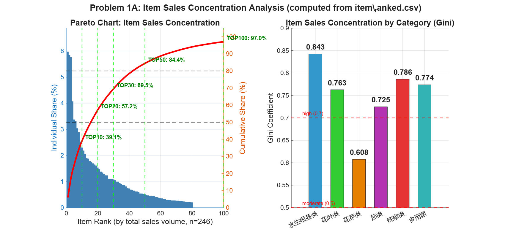
Gini 系数取值 0–1，衡量分布的不均等程度。Gini = 0 表示每个单品销量完全均等；Gini = 1 表示销量完全集中在一个单品上。在经济学中 Gini > 0.4 通常被视为不均等程度较高。图中以 0.5 和 0.7 为参考线分别标注中等集中度和高集中度。
| 品类 | 单品数 | Gini 系数 | 集中度评估 |
|---|---|---|---|
| 水生根茎类 | 18 | 0.843 | 集中度最高：18 个单品中排名第一的单品贡献了 66.9% 的该品类销量 |
| 辣椒类 | 43 | 0.786 | 高集中度 |
| 食用菌 | 71 | 0.774 | 高集中度 |
| 花叶类 | 99 | 0.763 | 高集中度——尽管单品数量最多（99 个），但头部单品仍占据大量份额 |
| 茄类 | 10 | 0.725 | 高集中度 |
| 花菜类 | 5 | 0.608 | 集中度最低（仅 5 个单品，分布相对均匀） |
3.3 时间序列分解（图 3）
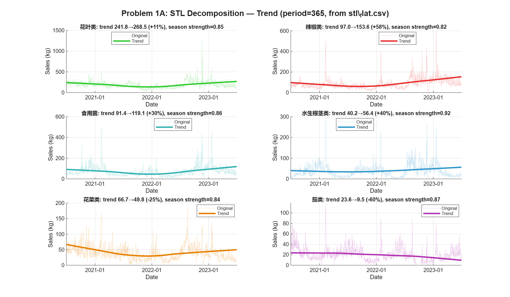
STL 将时间序列拆分为三个分量：趋势分量（Trend）——剔除季节和噪声后的长期走向；季节分量（Seasonal）——以固定周期（此处为 365 天，即年度）重复的波动模式；残差分量（Residual）——无法被趋势和季节解释的随机波动。STL 的优势在于能处理非固定形态的季节模式，且对异常值具有鲁棒性。
| 品类 | 趋势起始 (kg) | 趋势结束 (kg) | 三年变化率 | 趋势方向 |
|---|---|---|---|---|
| 辣椒类 | 97.0 | 153.6 | +58% | 强劲增长，需求快速扩张 |
| 水生根茎类 | 40.2 | 56.4 | +40% | 稳步增长 |
| 食用菌 | 91.4 | 119.1 | +30% | 稳步增长 |
| 花叶类 | 241.8 | 268.5 | +11% | 微增，基本稳定 |
| 花菜类 | 66.7 | 49.8 | −25% | 持续萎缩 |
| 茄类 | 23.6 | 9.5 | −60% | 急剧萎缩，三年间销量缩水过半 |
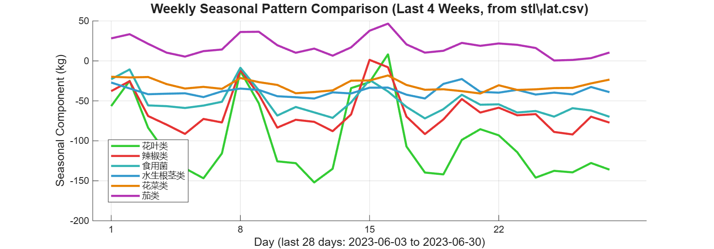
季节分量曲线显示所有品类均呈现约 7 天的周度周期波动，但振幅差异显著。花叶类振幅最大（约 −150 至 +10 kg），表明其周末效应最为突出；花菜类和水生根茎类的周内波动较小，需求相对均匀。
3.4 分布形态拟合（图 5）
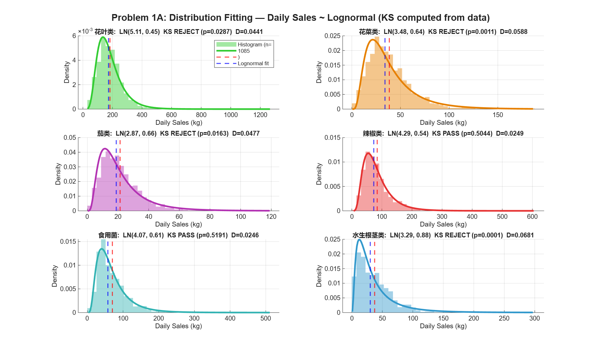
KS 检验用于判断样本数据是否来自某个特定分布。p 值 > 0.05 表示在 95% 置信水平下不能拒绝「数据服从该分布」的原假设（即拟合通过）；p 值 < 0.05 表示数据显著偏离该分布（拟合被拒绝）。D 统计量是经验分布函数与理论分布函数之间的最大偏差——D 越小表示拟合越紧密。
| 品类 | 对数正态参数 μ | 对数正态参数 σ | KS p 值 | 检验结果 |
|---|---|---|---|---|
| 花菜类 | 3.48 | 0.64 | 0.0011 | ❌ 拒绝 — 仅 5 个单品且存在零销量日，样本不足以验证分布假设 |
| 茄类 | 2.87 | 0.66 | 0.0163 | ❌ 拒绝 — 存在 35 个零销量日，零膨胀导致拟合失败 |
| 花叶类 | 5.11 | 0.45 | 0.0287 | ❌ 拒绝 — 大样本（n=1085）使 KS 检验过于敏感，需结合 QQ 图判断 |
| 辣椒类 | 4.29 | 0.54 | 0.5044 | ✅ 通过 — 对数正态分布拟合良好 |
| 食用菌 | 4.07 | 0.61 | 0.5191 | ✅ 通过 — 对数正态分布拟合良好 |
| 水生根茎类 | 3.29 | 0.88 | 0.0001 | ❌ 拒绝 — 呈现双峰分布特征（旺季/淡季两种模式），单一对数正态无法拟合 |
4. 问题 1B：品类相互关系
问题 1 的第二个子问题要求分析蔬菜各品类之间的相互关系。从两个维度展开：静态相关（品类的日销量是否同步涨跌）和动态相关（一个品类的销量变化是否领先或滞后于另一个品类）。
4.1 静态相关分析（图 4）
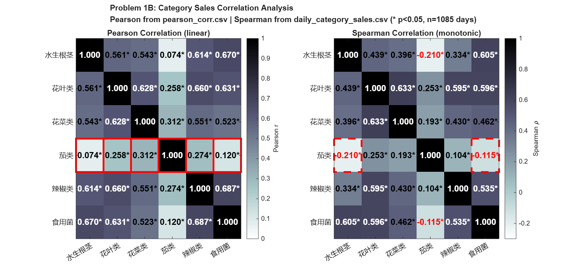
Pearson r 衡量两个变量之间的线性相关程度，取值范围 [−1, 1]。r > 0 表示正相关（A 增长时 B 也增长）；r < 0 表示负相关（A 增长时 B 下降）；|r| < 0.3 通常认为线性关系可忽略。Pearson 对异常值敏感。
Spearman ρ 先将数据转换为秩次再计算相关，衡量的是单调关系（不限于线性）。当 Pearson 和 Spearman 方向不一致时（如一个为正、一个为负），提示存在非线性关系。
显著性阈值：对于 n = 1,085 的样本，|r| > 2/√n ≈ 0.061 即达到 95% 统计显著性。图中用 * 标注所有显著的相关系数。
Pearson 相关性发现：
| 相关强度 | 品类对 | Pearson r | 解读 |
|---|---|---|---|
| 强相关 (r ≥ 0.6) | 辣椒类 ↔ 食用菌 | 0.687 | 线性关联最强的品类对 |
| 食用菌 ↔ 水生根茎类 | 0.670 | ||
| 花叶类 ↔ 辣椒类 | 0.660 | ||
| 花叶类 ↔ 食用菌 | 0.631 | ||
| 中等相关 (0.3 ≤ r < 0.6) | 花菜类 ↔ 水生根茎类 | 0.543 | |
| 弱相关 (r < 0.3) | 茄类 ↔ 花叶类 | 0.258 | 显著但微弱 |
| 茄类 ↔ 水生根茎类 | 0.074 | 接近零——几乎不存在线性关系 |
Spearman 额外发现：
| 品类对 | Pearson r | Spearman ρ | 解读 |
|---|---|---|---|
| 茄类 ↔ 水生根茎类 | +0.074 | −0.210 | 线性接近零，但秩相关为负——提示存在非线性的反向关系 |
| 茄类 ↔ 食用菌 | +0.120 | −0.115 | 同样出现符号反转 |
4.2 动态互相关分析（图 6）
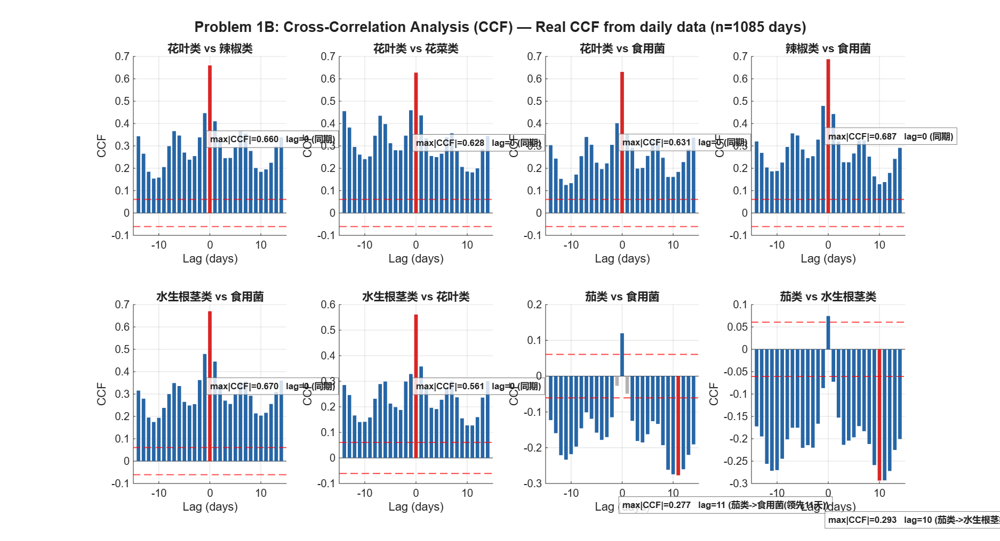
CCF 衡量两个时间序列在不同时间滞后下的相似程度。横轴 Lag（滞后）以天为单位：Lag = 0 表示两个品类在同一天的销量关系；Lag = +k 表示品类 A 当前的销量与品类 B 在 k 天后的销量之间的相关性（即 A 领先 B k 天）；Lag = −k 表示 B 领先 A k 天。红色虚线为 95% 置信阈值（±2/√n），超过该阈值的 CCF 值具有统计显著性。
CCF 与 Pearson 相关的关键区别：Pearson 只考察同一时刻的关系（Lag = 0），CCF 则考察所有可能的领先-滞后组合，能够揭示时序上的因果线索。
| 品类对 | 最大 |CCF| | 最优滞后 | 关系类型 |
|---|---|---|---|
| 辣椒类 ↔ 食用菌 | 0.687 | 0 天 | 同期强相关 |
| 食用菌 ↔ 水生根茎类 | 0.670 | 0 天 | 同期强相关 |
| 花叶类 ↔ 辣椒类 | 0.660 | 0 天 | 同期强相关 |
| 花叶类 ↔ 食用菌 | 0.631 | 0 天 | 同期强相关 |
| 花叶类 ↔ 花菜类 | 0.628 | 0 天 | 同期中等相关 |
| 水生根茎类 ↔ 花叶类 | 0.561 | 0 天 | 同期中等相关 |
| 水生根茎类 → 茄类 | 0.293 | +10 天 | 水生根茎类领先茄类 10 天 |
| 茄类 → 食用菌 | 0.277 | +11 天 | 茄类领先食用菌 11 天 |
5. 问题 1 小结
| 维度 | 核心发现 | 对后续问题的指导意义 |
|---|---|---|
| 1A 分布规律 | 花叶类是核心品类（份额 42.2%，日均 183.1 kg），同时相对最稳定（CV = 0.471）。所有品类呈右偏厚尾分布，不能用正态分布建模。TOP30 单品贡献 70% 销量。 | 补货资源优先分配花叶类；需求模型须采用对数正态或混合分布；单品选择应优先保障头部畅销品 |
| 1A 时间趋势 | 辣椒类（+58%）、水生根茎（+40%）、食用菌（+30%）三年持续增长；花菜类（−25%）和茄类（−60%）持续萎缩。所有品类销量由季节主导（季节强度 0.76–0.83）。 | 未来补货量应根据趋势方向调整：增长品类上调配货，萎缩品类控制库存减少损耗 |
| 1B 静态关系 | 五类蔬菜间存在广泛的中等至强正相关（Pearson r = 0.52–0.69）。茄类独立于所有其他品类（所有 r ≤ 0.31），且与部分品类 Spearman 为负。 | 五类蔬菜可纳入联合预测模型共享季节性信息；茄类需单独建模 |
| 1B 动态关系 | 水生根茎类领先茄类 10 天；茄类领先食用菌 11 天。其余品类对为同期关系。 | 领先-滞后关系可作为补货预警信号：监控领先品类的销量变化可提前 10–11 天预判滞后品类的需求波动 |
6. 问题 2A：销售总量与成本加成定价的关系
问题 2 的第一个子问题要求分析各蔬菜品类的销售总量与成本加成定价的关系，即量化「加成率变动会导致销量变动多少」。回答这一问题的核心工具是需求价格弹性——衡量价格变化 1% 时需求量变化百分之几的指标。弹性小于 1 意味着涨价带来的利润增量大于销量损失，涨价是划算的。
问题 1 的 STL 分解已将日销量拆分为趋势（trend）、季节（seasonal）和残差（residual）三个分量。问题 2 在建模时将趋势和季节分量作为已知控制变量纳入需求模型——问题 1 和问题 2 在此处直接衔接。
6.1 需求模型设定
采用对数线性需求模型（log-linear demand model），因变量为 ln(日销量)，自变量包括 ln(售价) 和六个控制变量：
| 变量 | 含义 | 来源 |
|---|---|---|
| $\ln Q_t$ | 当日销量的自然对数 | 附件2按品类聚合 |
| $\ln P_t$ | 当日均价的自然对数 | 附件2销售额÷销量 |
| $\text{discount}_t$ | 当日打折销售占比 | 附件2「是否打折」字段 |
| $\text{weekend}_t$ | 周末哑变量（周六/日=1） | 日期推导 |
| $\ln Q_{t-1}$ | 前一日销量（滞后1阶） | 捕捉需求惯性 |
| $\ln Q_{t-7}$ | 前一周同日销量（滞后7阶） | 捕捉周度模式 |
| $\text{trend}_t$ | STL趋势分量 | 问题1产出 — STL分解结果 |
| $\text{seasonal}_t$ | STL季节分量 | 问题1产出 — STL分解结果 |
6.2 时序平稳性诊断
ADF 检验（Augmented Dickey-Fuller Test）：原假设 H₀ 为「序列存在单位根（不平稳）」；p < 0.05 则拒绝 H₀，认为序列平稳。
KPSS 检验（Kwiatkowski-Phillips-Schmidt-Shin Test）：原假设 H₀ 为「序列平稳」；p < 0.05 则拒绝 H₀，认为序列不平稳。两者互补——ADF 偏向不拒绝 H₀，KPSS 偏向拒绝 H₀。
若 ln(Q) 和 ln(P) 均不平稳但存在协整关系，水平回归仍然有效（超一致性）。若不存在协整而直接做水平回归，则属于伪回归——R² 和 t 值均不可信。
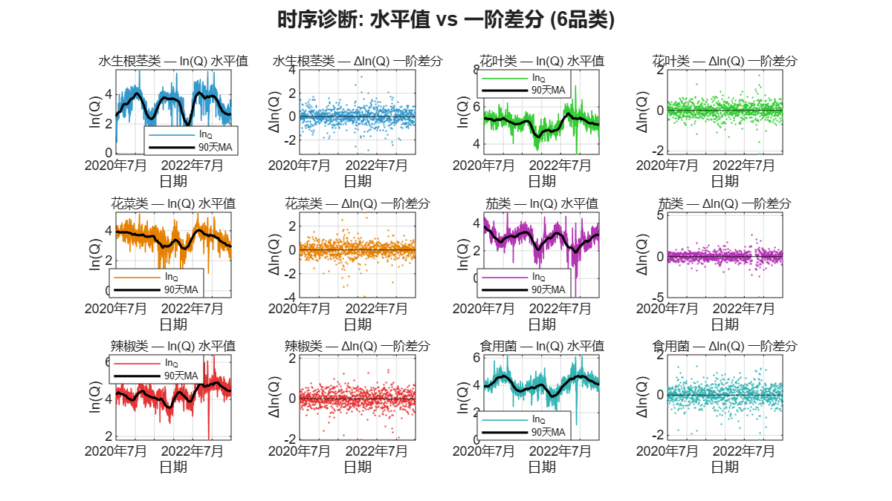
| 品类 | ln(Q) ADF p | ln(Q) KPSS p | ln(Q) 状态 | ln(P) 状态 | EG 协整 | 结论 |
|---|---|---|---|---|---|---|
| 水生根茎类 | 0.045 | 0.01 | 趋势平稳 | I(1) | ✅ p=0.001 | 水平OLS有效 |
| 花叶类 | 0.013 | 0.01 | 趋势平稳 | I(1) | ✅ p=0.001 | 水平OLS有效 |
| 花菜类 | 0.001 | 0.01 | 趋势平稳 | 趋势平稳 | — | 水平OLS有效 |
| 茄类 | 0.028 | 0.01 | 趋势平稳 | 趋势平稳 | — | 水平OLS有效 |
| 辣椒类 | 0.004 | 0.01 | 趋势平稳 | 趋势平稳 | — | 水平OLS有效 |
| 食用菌 | 0.008 | 0.01 | 趋势平稳 | 趋势平稳 | — | 水平OLS有效 |
6.3 需求价格弹性估计
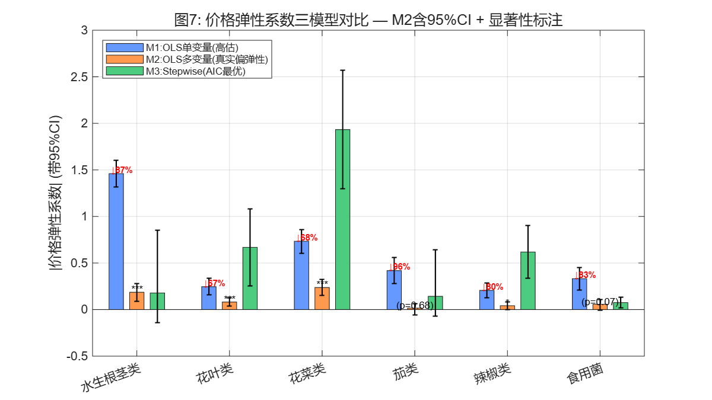
| 品类 | M1 R² | M2 R² | M1 弹性 | M2 弹性 | 高估幅度 | M2 p 值 | M1 DW | M2 DW | 判断 |
|---|---|---|---|---|---|---|---|---|---|
| 花菜类 | 0.20 | 0.68 | 0.73 | 0.24 | ↓68% | <0.001 | 0.86 | 1.69 | ✅ 显著 |
| 水生根茎类 | 0.28 | 0.79 | 1.46 | 0.19 | ↓87% | 0.0001 | 0.65 | 1.83 | ✅ 显著 |
| 花叶类 | 0.19 | 0.82 | 0.25 | 0.08 | ↓67% | 0.0003 | 0.59 | 1.40 | ⚠ 边际 |
| 辣椒类 | 0.25 | 0.82 | 0.21 | 0.04 | ↓80% | 0.038 | 0.57 | 1.48 | ⚠ 边际 |
| 食用菌 | 0.20 | 0.80 | 0.33 | 0.06 | ↓83% | 0.074 | 0.52 | 1.49 | ❌ 不显著 |
| 茄类 | 0.07 | 0.73 | 0.42 | 0.02 | ↓96% | 0.68 | 0.69 | 1.77 | ❌ 不显著 |
DW 统计量检验回归残差是否存在一阶自相关。DW 接近 2 表示无自相关；DW < 1.5 表示存在正自相关（残差不是随机白噪声，相邻观测值的误差倾向于同方向）。正自相关会导致 OLS 标准误偏低，使 t 检验夸大了系数的显著性。M2 通过加入滞后项（lag1、lag7），将 DW 从 M1 的 0.52–0.86（严重自相关）提升至 1.40–1.83（大幅改善），但仍有部分品类 DW 偏离 2，需要后续的 Newey-West 修正。
F 检验：所有模型均通过 F 检验（p < 0.0001），表明回归方程整体显著——解释变量联合起来能够解释销量的变动。F 检验检验的是「所有系数同时为零」的假设，拒绝该假设意味着模型具有整体的解释力。
VIF（方差膨胀因子）：所有变量 VIF < 2.5，远低于 10 的警戒值，表明变量间不存在多重共线性问题。
6.4 Newey-West HAC 标准误修正
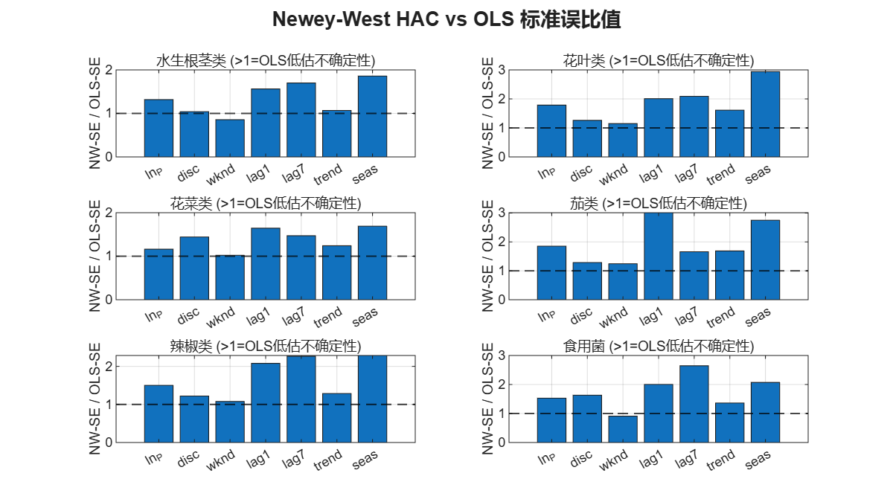
当残差存在自相关或异方差时，OLS 的标准误不再可靠——通常会低估真实的不确定性，导致 t 检验的 p 值偏小（伪显著）。Newey-West 估计量（HAC: Heteroskedasticity and Autocorrelation Consistent）通过引入自相关核函数和自动带宽选择，给出在任意形式的自相关和异方差下都一致的标准误估计，使得 t/p 值在统计上可信。
| 品类 | M2 弹性 β | OLS-SE | NW-SE | SE 比值 | OLS p | NW p | NW 后结论 |
|---|---|---|---|---|---|---|---|
| 花菜类 | −0.237 | 0.044 | 0.051 | 1.16 | <0.001 | <0.001 | ✅ 显著 |
| 水生根茎类 | −0.186 | 0.048 | 0.064 | 1.32 | 0.0001 | 0.004 | ✅ 显著 |
| 花叶类 | −0.081 | 0.022 | 0.040 | 1.79 | 0.0003 | 0.042 | ⚠ 边际 |
| 辣椒类 | −0.042 | 0.020 | 0.030 | 1.50 | 0.038 | 0.17 | ❌ NW后不显著 |
| 食用菌 | −0.058 | 0.032 | 0.049 | 1.53 | 0.074 | 0.24 | ❌ 不显著 |
| 茄类 | −0.016 | 0.039 | 0.073 | 1.85 | 0.68 | 0.82 | ❌ 不显著 |
7. 问题 2B：日补货量与定价策略
问题 2 的第二个子问题要求给出各蔬菜品类未来一周（2023年7月1–7日）的日补货总量和定价策略，使得商超收益最大。这需要三个步骤：需求预测 → 优化求解 → 不确定性量化。
7.1 7 天基线需求预测
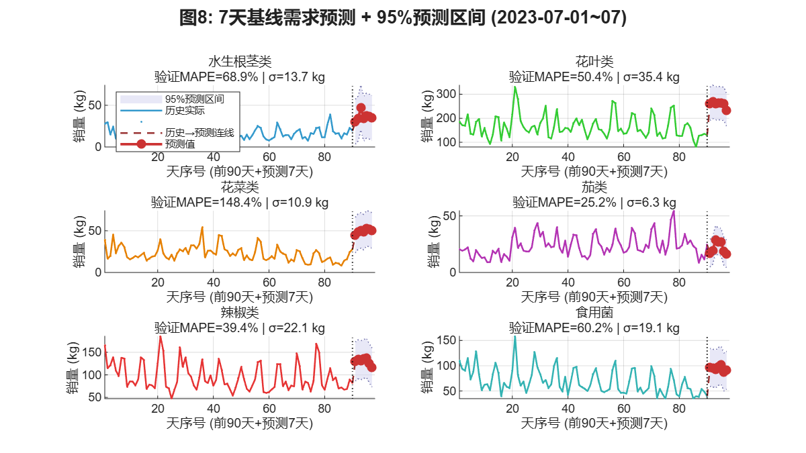
95% 预测区间 = 点预测值 ± 1.96 × σresid，其中 σresid 是训练期残差的标准差。含义为：如果模型假设正确，未来实际值有 95% 的概率落在此区间内。区间越宽，预测越不确定。
MAPE（Mean Absolute Percentage Error，平均绝对百分比误差）= 预测误差绝对值占实际值的百分比的平均。MAPE < 20% 为优秀，20–50% 为可接受，> 50% 为差。但蔬菜日销量的先天高波动性使得 MAPE 天然偏高，需结合实际意义解读。
| 品类 | 7/1 预测 | 7/3(峰值) 预测 | 7/7 预测 | 95%PI 宽度 | σ (kg) | 验证 MAPE | 预测质量 |
|---|---|---|---|---|---|---|---|
| 茄类 | 17 | 29 | 16 | ±12 kg | 6.3 | 25.2% | ⚠ 勉强可用 |
| 辣椒类 | 130 | 132 | 116 | ±43 kg | 22.1 | 39.4% | ⚠ 可接受 |
| 花叶类 | 261 | 262 | 234 | ±69 kg | 35.4 | 50.4% | ❌ 较差 |
| 食用菌 | 96 | 93 | 91 | ±37 kg | 19.1 | 60.2% | ❌ 差 |
| 水生根茎类 | 30 | 47 | 35 | ±27 kg | 13.7 | 68.9% | ❌ 差 |
| 花菜类 | 45 | 51 | 50 | ±21 kg | 10.9 | 148.4% | ❌ 基本失效 |
7.2 报童 + 定价联合优化模型
报童模型是处理单周期、随机需求、存在缺货和过量成本的经典库存模型。报童每天早晨决定进货量 Q：进多了 → 卖不完 → 承担过量成本（损耗）；进少了 → 不够卖 → 承担缺货成本（少赚的利润）。最优进货量平衡这两种成本，使得期望利润最大化。本题中，蔬菜保鲜期短且损耗率高，符合报童模型的假设。
模型的关键输入是需求分布。本文假设日需求服从对数正态分布（问题 1 的图 5 已检验），均值为 M2 需求模型预测值，标准差为训练期残差。定价通过 M2 弹性系数影响需求均值。
其中 $r$ 为成本加成率（决策变量），$Q$ 为进货量（决策变量），$C$ 为预测批发成本（90 天滚动均值），$\ell$ 为品类损耗率（附件4），$\beta$ 为 M2 估计的价格弹性，$\hat{Q}$ 为 STL 基线需求预测，$\sigma$ 为需求对数标准差。求解采用 MATLAB fmincon SQP 算法。优化搜索范围限制在历史价格区间内（各品类的 P1–P99 加成率），确保需求模型不进行不可靠的外推。
7.3 最终补货方案
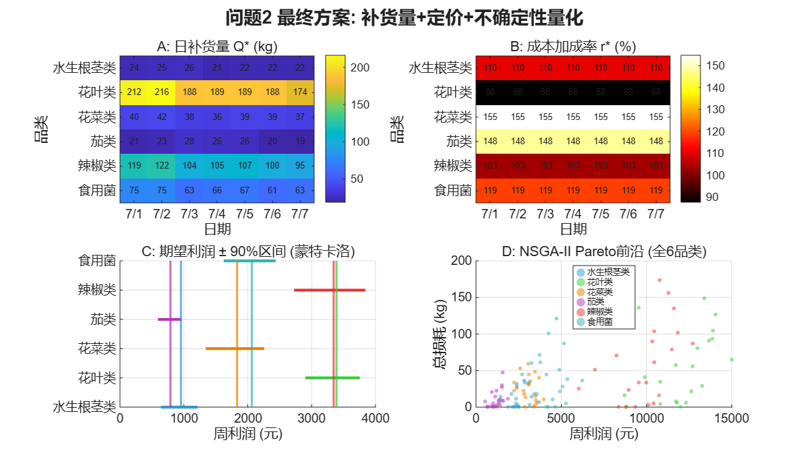
日补货量 Q*（kg）与定价策略
| 品类 | 7/1 | 7/2 | 7/3 | 7/4 | 7/5 | 7/6 | 7/7 | 加成率 | 售价(元/kg) | 周总Q |
|---|---|---|---|---|---|---|---|---|---|---|
| 花叶类 | 211.5 | 216.2 | 188.4 | 189.1 | 188.9 | 187.7 | 174.3 | 87.5% | 8.18 | 1,356 |
| 辣椒类 | 119.0 | 122.1 | 103.5 | 105.3 | 107.0 | 100.2 | 95.0 | 103.5% | 12.55 | 752 |
| 食用菌 | 75.4 | 75.2 | 63.4 | 65.8 | 67.0 | 61.1 | 62.7 | 118.8% | 11.98 | 471 |
| 花菜类 | 39.6 | 42.5 | 37.7 | 36.4 | 39.2 | 38.9 | 37.4 | 154.8% | 19.56 | 272 |
| 茄类 | 20.8 | 22.6 | 28.1 | 26.5 | 26.2 | 20.1 | 18.7 | 147.9% | 11.90 | 163 |
| 水生根茎类 | 23.6 | 24.9 | 25.8 | 21.3 | 22.5 | 22.1 | 21.8 | 110.2% | 20.34 | 162 |
| 合计 | 490 | 504 | 447 | 444 | 451 | 430 | 410 | — | — | 3,176 |
7.4 不确定性量化：蒙特卡洛模拟
蒙特卡洛模拟通过对需求分布重复抽样（本文进行 10,000 次），模拟各种可能的需求场景，计算出利润的完整概率分布——而非单一的点估计。从分布中可以直接读出：VaR 5%（5% 分位数）：有 95% 的把握利润不低于此值，衡量最坏情况的风险敞口。CV（变异系数 = 标准差/均值）：利润的相对波动程度，CV 越小表示利润越稳定可预期。
| 品类 | MC 期望利润 | VaR 5% | VaR 95% | 利润 CV | 风险等级 |
|---|---|---|---|---|---|
| 花叶类 | 3,390 | 2,899 | 3,755 | 7.8% | ✅ 低风险 |
| 辣椒类 | 3,345 | 2,726 | 3,841 | 10.1% | ✅ 较低风险 |
| 食用菌 | 2,064 | 1,625 | 2,436 | 11.9% | ⚠ 中等风险 |
| 花菜类 | 1,834 | 1,342 | 2,259 | 15.2% | ⚠ 中等风险 |
| 茄类 | 790 | 595 | 961 | 14.2% | ⚠ 中等风险 |
| 水生根茎类 | 955 | 641 | 1,216 | 18.2% | ❌ 高风险 |
| 合计 | 12,378 | — | — | — | — |
7.5 多目标权衡：NSGA-II Pareto 前沿
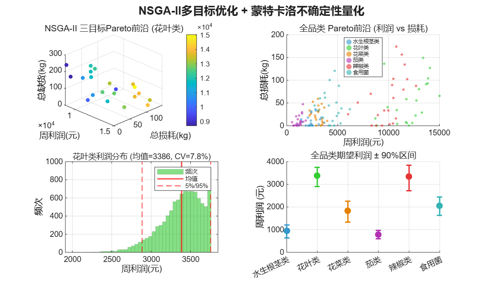
NSGA-II（Non-dominated Sorting Genetic Algorithm II）是一种多目标进化算法。当优化问题有多个相互冲突的目标时（如利润最大化、损耗最小化、缺货最小化），不存在单一的「最优解」——提高利润通常意味着接受更多损耗和缺货。Pareto 前沿是所有「非支配解」的集合：在前沿上的任何一个解，要改进一个目标就必须牺牲另一个目标。决策者可以根据自己的风险偏好从前沿上选择方案。
| 品类 | Pareto 非支配解数 | 利润范围 (元) | 利润 vs 损耗特征 |
|---|---|---|---|
| 花叶类 | 21 | 6,383 – 12,435 | 利润↑ → 损耗显著↑，前沿坡度较陡 |
| 辣椒类 | 19 | 4,504 – 9,022 | 利润↑ → 损耗平缓↑，权衡空间较大 |
| 食用菌 | 21 | 2,295 – 5,213 | 中间特征 |
| 花菜类 | 21 | 651 – 2,777 | 利润↑ → 损耗急剧↑，前沿陡峭 |
| 茄类 | 21 | 751 – 1,831 | 利润↑ → 损耗显著↑ |
| 水生根茎类 | 21 | 268 – 1,104 | 整体利润偏低 |
8. 问题 2 小结
| 维度 | 核心发现 | 对后续问题的指导意义 |
|---|---|---|
| 2A 价格弹性 | M1 单变量模型因遗漏变量严重高估弹性（高估 67–96%）。M2 多变量模型控制季节+趋势+滞后后，R² 从 0.07→0.73，DW 从 0.5→1.7。真实偏弹性为 0.02–0.24——六品类需求均极度缺乏弹性。NW 修正后确认仅 3/6 品类价格效应显著。 | 问题 3 的单品级优化应优先选择价格有效组品类（花菜、水生根茎、花叶）的单品，对这些品类的定价策略更有数据支撑。价格无效组品类的定价应参考历史均价或竞争定价。 |
| 2A 时序诊断 | ADF+KPSS+EG 三步检验确认全部品类 ln(Q) 趋势平稳，水平 OLS 有效，排除伪回归风险。 | 问题 3 若涉及时间序列分析，可沿用水平回归框架，无需差分。 |
| 2B 需求预测 | STL 趋势外推+季节分量给出 7 天基线预测。预测精度在品类间差异大：茄类 MAPE 25.2%，花菜类 148.4%。95% 预测区间占预测值 ±40–90%，反映蔬菜日销量的先天高噪声。 | 问题 3 应选用预测精度较高的品类（茄、辣椒、花叶）做重点单品推荐；花菜类因预测基本失效，单品方案需更为保守。 |
| 2B 优化方案 | 周总利润 12,378 元，日进货 454 kg。全部品类加成率触历史 P99 上界——模型认为应尽可能定高价。蒙特卡洛模拟显示花叶类利润最稳（CV=7.8%），水生根茎类最不稳（CV=18.2%）。NSGA-II 给出利润-损耗的 Pareto 前沿。 | 问题 3 单品级方案面临更紧的约束（27–33 个可售品、最小陈列量 2.5 kg），品类级利润分布可为单品选择的优先级提供依据。Pareto 前沿的方法可延续至问题 3 的多目标决策。 |
9. 本问题使用的方法
| # | 方法 | 解决的问题 | 选择理由 |
|---|---|---|---|
| 1 | 描述统计 | 品类/单品销量的集中趋势、离散度、分布形态 | 所有分析的基础，提供数据的全局视图 |
| 2 | Gini 系数 + 帕累托分析 | 单品销量集中度 | 量化「少数单品占多数销量」的程度 |
| 3 | STL 分解（period = 365） | 年度季节 + 长期趋势分离 | 蔬菜具有自然年度季节性，STL 对非固定季节形态具有鲁棒性。分解结果直接作为问题 2 需求模型的控制变量 |
| 4 | Pearson + Spearman 相关 | 品类间线性与单调关联强度 | 直接回答问题 1B，为问题 2 的交叉弹性分析提供先验 |
| 5 | 对数正态拟合 + KS 检验 | 日销量分布形态检验 | 为问题 2 的报童模型提供需求分布假设 |
| 6 | 交叉相关函数 CCF | 品类间领先-滞后关系 | 在静态相关外增加时间维度 |
| 7 | ADF + KPSS + EG 协整检验 | 时间序列平稳性诊断 | 排除伪回归风险，验证水平 OLS 的合法性 |
| 8 | 多元对数线性回归 (M2) | 量化各品类需求价格弹性 | 问题 1 的 STL 分量作为控制变量纳入，消除遗漏变量偏差 |
| 9 | Newey-West HAC 标准误 | 修正自相关对标准误的低估 | 残差自相关存在时给出可靠 t/p 值 |
| 10 | 报童模型 (Newsvendor) | 随机需求下的最优订货量决策 | 蔬菜保鲜期短、需求随机，符合报童模型假设 |
| 11 | fmincon SQP 非线性规划 | 定价与补货联合最优求解 | 目标函数非凸，SQP 适合中小规模约束优化 |
| 12 | 蒙特卡洛模拟 | 利润不确定性量化 (VaR/CV) | 给出利润分布而非点估计，诚实呈现不确定性 |
| 13 | NSGA-II 多目标进化算法 | 利润-损耗-缺货三目标权衡 | 不追求单一最优，给决策者 Pareto 方案菜单 |